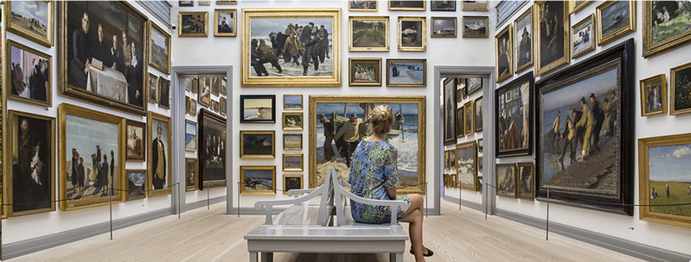

Skagens kunstmuseum
Skagens Museum blev stiftet den 20. oktober 1908 i Brøndums Hotel af bl.a.
Ancher, Krøyer og Tuxen.

SKAGENS KUNSTMUSEUM
Museet åbner i dag fra kl. 10 - 17
10:00 - 17:00
Tirsdag til søndag
LUKKET
Mandag
Speciale åbningstider: i perioden fra den 1 nov. til 21 dec. er der åbnet tirsdag til søndag fra 10 - 16
Helligdage: i juleferien holder museet lukket fra d. 22 til 26 dec. samt d. 31
ENTRE PRIS
Billet
Oplev mesterværkerne på Skagens Museum, der huser verdens største samling af skagensmalernes kunst.
Pris for voksne
140 kr.
Pris for ung (under 28 år.)
90 kr.
Børn (under 18 år.)
GRATIS
Kombibillet
Vil du se det hele? Godt valg! Køb en kombibillet, som giver adgang til Skagens Museum, Anchers Hus og Drachmann Hus.
Kombibillet for voksne
200 kr.
Kombibillet for børn (under 28 år.)
GRATIS
Historie om museet
Kunstnerkolonien i Skagen blev grundlagt, da en ung Holger Drachmann besøgte det lille fiskersamfund for første gang i 1872. I årene efter fulgte en gruppe af unge kunstnere, der alle kendte hinanden fra kunstakademiet i København. På den måde opstod efterhånden en af Skandinaviens mest kendte og anerkendte kunstnerkolonier med navne som Michael og Anna Ancher, P.S. Krøyer, Laurits Tuxen, Holger Drachmann, Carl Locher, Thorvald Bindesbøll, Ulrik Plesner, Christian Krohg og Oscar Björck.
Skagens Museum blev bygget i Brøndum Hotels gamle have. Her ligger stadig de to fredede bygninger, Havehuset, hvor Michael og Anna Ancher boede de første år af deres ægteskab, samt et gamle korntørringsmagasin, som P.S. Krøyer brugte som atelier. Da museumsbygningen stod færdig i 1928 bestod samlingen af 325 værker. Gennem årene, og ikke mindst efter fusionen med Michael og Anna Anchers Hus og Drachmanns Hus i slutningen af 2014, er den fælles samling nu vokset til næsten 20.000 værker.
Bygning om museet
Fra 1911 og indtil museumsbygningen, der blev tegnet af Ulrik Plesner, stod færdig i 1928, fungerede Krøyers Hus som udstillingssted. Krøyers Hus fortsatte som en afdeling af Skagens Museum indtil 1940, da 2. verdenskrig brød ud. Brøndums spisesal blev flyttet over på museet i 1946. Den dag i dag udgør spisesalen stadig hjertet af museet, og er på den måde både kernen af og hele begyndelsen på museets historie.
Museet på Brøndumsvej er blevet udvidet flere gange. I 1982 fik museet sin første tilbygning, der indeholdt et øget udstillingsareal samt et lille tegningsmagasin. I 1989 blev der udvidet med en butik, toiletter og en mindre kælder til depot og personale. I slutningen af 2004 blev museet udvidet endnu engang, denne gang med et lille gult bindingsværkshus, beliggende på Sct. Laurentii Vej 9. Huset var en gave fra Bikubenfonden.
I 2008, hundredeåret for stiftelsen af Skagens Museum, blev beslutningen om en gennemgribende renovering og udvidelse af museet taget. Projektet gik i gang i 2014, og den 12. februar 2016 kunne Hendes Majestæt Dronning Margrethe endelig erklære det udvidede og gennemrenoverede Skagens Museum for åbent.
Historie om museet